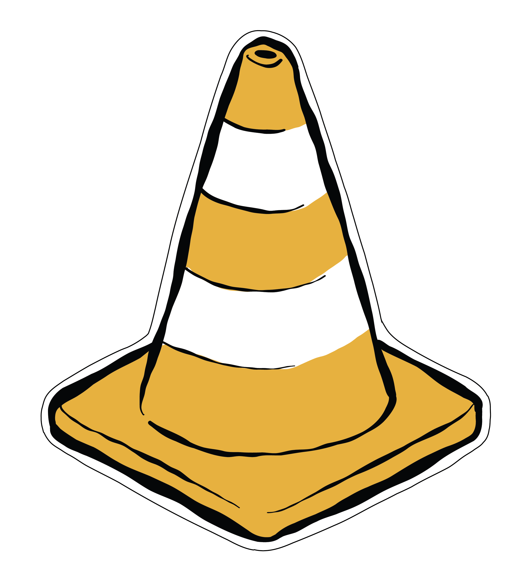

PROYECTO DE AMPLIACIÓN DEL CANAL
La ampliación consistió en la construcción de dos nuevos complejos de esclusas y un tercer carril de tránsito que permitiría el tránsito de buques más grandes y con mayor cantidad de carga.
Para cumplir con el programa de ampliación, el proyecto se organizó en cinco componentes que involucraban el diseño y construcción de las nuevas esclusas, trabajos de dragado y mejoras al suministro de agua.
*Selecciona esta opción para ampliar información de proyecto de ampliación del Canal
MEJORAS AL CAUCE DE ACCESO DEL PACÍFICO
PROFUNDIZACIÓN DE LAS ENTRADAS DEL CANAL
MEJORAS A LOS CAUCES DE NAVEGACIÓN
DISEÑO Y CONSTRUCCIÓN DE ESCLUSAS
MEJORAS AL SUMINISTRO DE AGUA